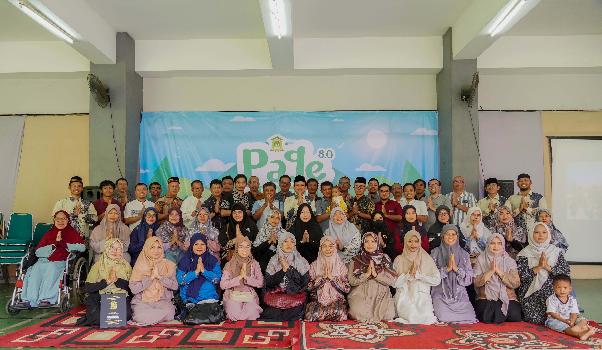
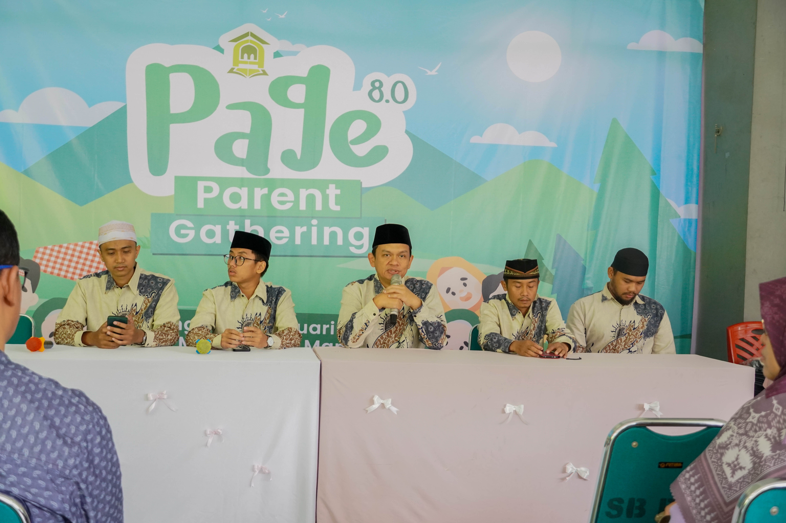
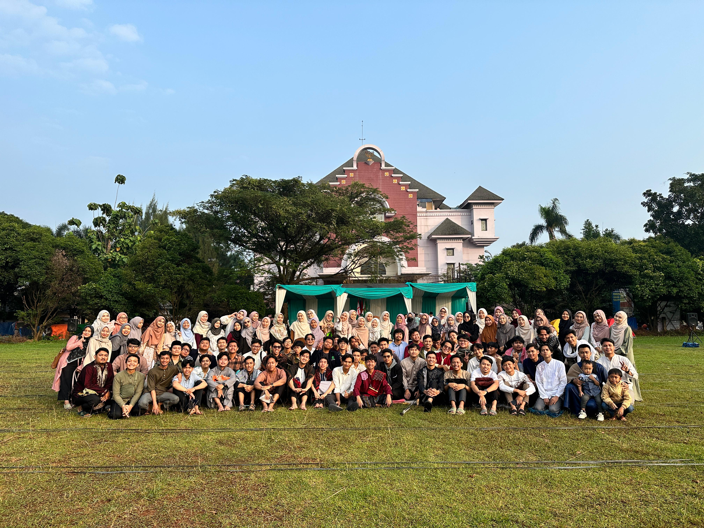

Activities in PPM AFM






At Pondok Pesantren Mahasiswa Al-Faqih Mandiri, we nurture not only academic excellence but also spiritual growth, leadership, and community service. Activities are designed to shape well-rounded individuals rooted in Islamic values.
🕌 Daily Routine
- Qur’an and Hadith sessions with teachers after Subuh and after Isya (2x daily)
- Tahajjud every Tuesday and Friday night
- Ba’da Maghrib advice sessions every Monday and Wednesday
- Full cleaning duty every Saturday (mosque & environment)
Craving for more other activity in PPM?
See More on About AFMOur Nearby Campuses


6
Dewan Guru
92
Total Mahasiswa/i
44
Mahasiswa
48
Mahasiswi
*Data per Januari 2025
Our Prime Location
Address:
Jl. Sawo No.33b, Pondok Cina, Kecamatan Beji, Kota Depok, Jawa Barat 16424
Email:
ppm.alfaqihmandiri[AT]gmail.com
Phone Number:
+62 858-8268-5011
Operational Hour:
Senin - Sabtu: 6AM - 10PM